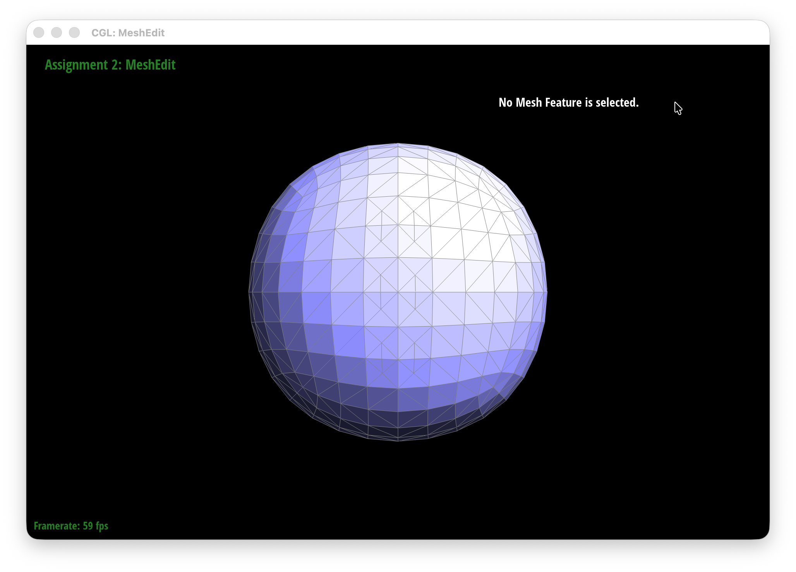
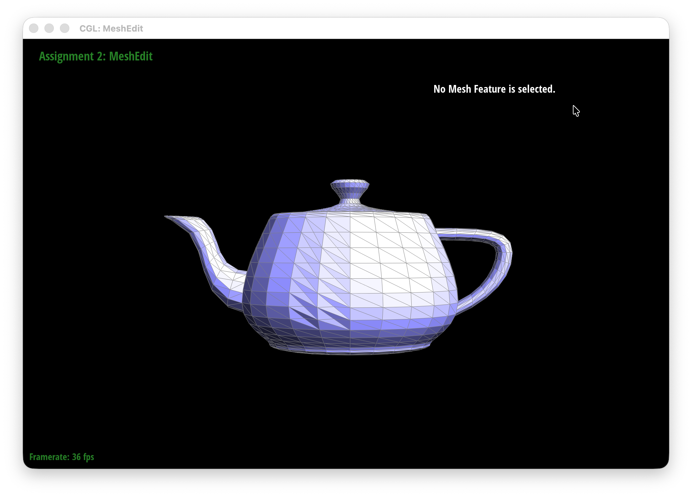
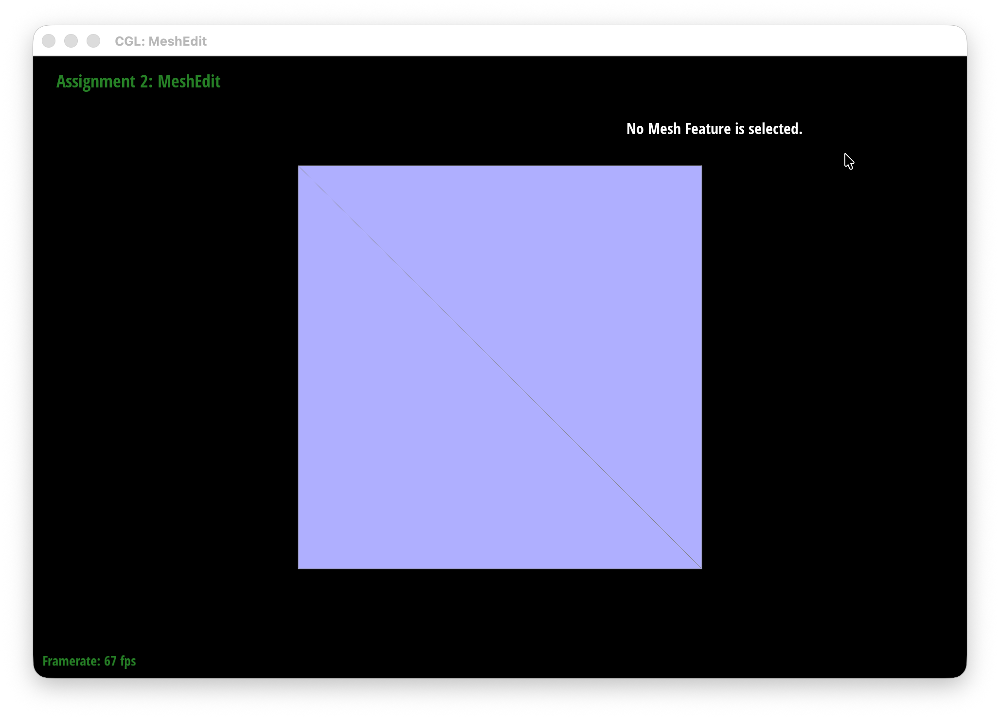
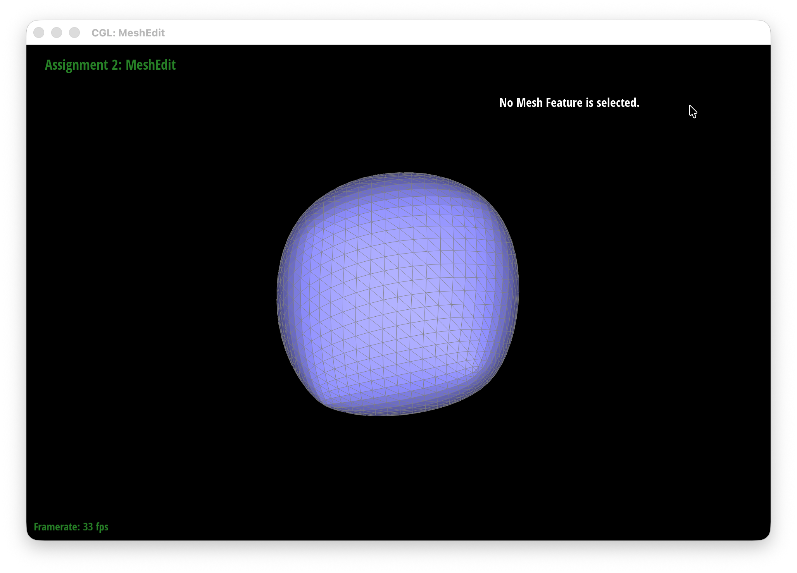
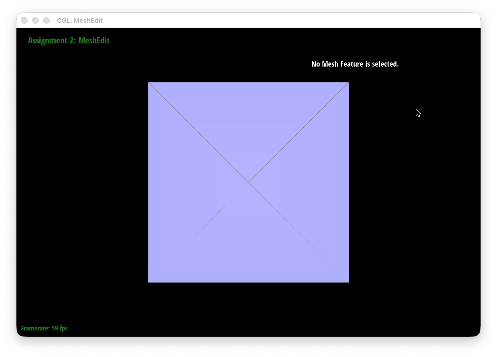
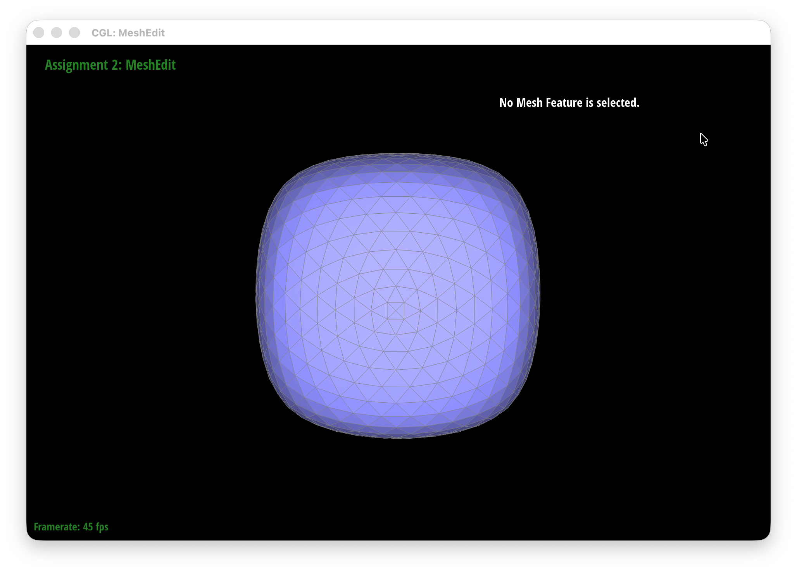

CS184/284A Fall 2026 Homework 2 Write-Up
Link to webpage: https://cal-cs184-student.github.io/hw2-kxchier-writeup/
Link to GitHub repository: https://github.com/cal-cs184-student/hw2-kxchier
Overview
In this homework, I worked with Bezier curves and surfaces and implemented several operations for triangle meshes using the half-edge data structure. I implemented de Casteljau's algorithm, area-weighted vertex normals, edge flips, edge splits, and Loop subdivision. A lot of work involved keeping track of how the half-edges, vertices, edges, and faces were connected, especially when changing the mesh topology. I found that drawing out the half-edge structure by hand was especially useful when debugging pointer-related problems. Loop subdivision also gave me a better sense of how the connectivity of a mesh affects the shape produced by repeated subdivision. :>
Section I: Bezier Curves and Surfaces
Part 1: Bezier curves with 1D de Casteljau subdivision
I implemented de Casteljau's algorithm by taking each pair of neighboring control points and linearly interpolating between them using the parameter t. This gives us a new set of points with one fewer point than the previous level. I repeated this process until only one point remained, which is the point on the Bezier curve at t.
In evaluateStep(), I loop through the control points and use
\[
p_i' = (1-t)p_i + tp_{i+1}
\]
to calculate each intermediate point. I store these points in a new
vector and return it. Each call to evaluateStep() only
computes one level of the algorithm.
Starting with six control points, I applied de Casteljau's algorithm one level at a time. Each level takes a linear interpolation between every pair of adjacent points, so the number of points decreases from 6 to 5, then 4, 3, 2, and finally 1.


I also moved several of the original control points and changed t by scrolling. This changed the shape of the curve and moved the evaluated point along the curve.

Part 2: Bezier surfaces with separable 1D de Casteljau
For Bezier surfaces, I extended the 1D de Casteljau algorithm by applying it in two directions. I first evaluated each row of control points at u, which gives us one point for each row. I then treated these points as a new Bezier curve and evaluated it at v to get the final point on the surface.
I used the same evaluateStep() idea from Part 1, but with 3D points. I used linear interpolation on each pair of neighboring points and repeated the process in evaluated1D() until there was only one point left. For evaluate(), I first evaluated each row using u, then used those resulting points to evaluate the surface using v.

bez/teapot.bez evaluated using separable 1D de Casteljau.Section II: Triangle Meshes and Half-Edge Data Structure
Part 3: Area-weighted vertex normals
I implemented the vertex normals by walking through all of the faces surrounding each vertex. For each face, I used the two edges starting at the vertex and took their cross product to get the face normal. Since the magnitude of the cross product is proportional to the area of the triangle, larger faces contribute more to the final normal. I added these contributions together and normalized the result to get the vertex normal.

bez/teapot.dae with default flat shading. |

bez/teapot.dae with Phong shading using vertex normals. |
Part 4: Edge flip
I implemented edge flipping by first finding the six half-edges surrounding the two faces adjacent to the selected edge. The two half-edges of the selected edge are twins, and I used next() to find the other half-edges belonging to each face. I then changed the selected edge's endpoints to the two opposite vertices, replacing the original diagonal with the other diagonal of the quadrilateral. Finally, I updated the next() pointers and face pointers so that the six half-edges form the two new triangular faces. I also check whether the selected edge is a boundary edge and leave it unchanged if so.

|

|
During my implementation and debugging journey, the half-edge pointers became "pointer soup" and my first attempt at the edge flip caused a hole to appear in the mesh. To debug, I ended up drawing the two triangles and all six half-edges out on a piece of paper and tracing their directions. This helped me realize that some of my next() pointers were connected the wrong half-edges and that I was getting one of the opposite vertices from the wrong half-edge.
Part 5: Edge split
I implemented the edge split by first finding the six half-edges and two faces surrounding the edge being split. I also saved the four vertices around the edge so I could identify the two vertices on either side of the edge. I then created a new vertex at the midpoint of the original edge. Since the split turns the original two triangles into four triangles, I created three new edges, six new half-edges, and two new faces. The original edge is reused as one of the new edges rather than creating an extra edge that is no longer needed.
After creating these elements, I set up their twin and vertex pointers and rearranged the next() pointers to form the four new triangular faces. I also updated the face pointers and made sure that the new vertex and edges point to the appropriate half-edges. For the new vertex, I specifically set its half-edge to point along the original edge. I return the new vertex after the split is complete.
The hardest part was keeping track of all the new pointers in a messy pointer soup! I drew the original two triangles and the four triangles after the split on a piece of paper and labeled all of the half-edges with their directions. I could then trace around each triangle and figure out which next() pointers should connect. :3
|
|
 |
|
|
 |
Part 6: Loop subdivision for mesh upsampling
I implemented Loop subdivision in five steps. First, I computed new positions for all of the original vertices using the Loop subdivision weighting rule and stored them in newPosition. For each vertex, I found its neighboring vertices and used their positions to compute the weighted average. I also marked these vertices as old using isNew.
Next, I computed the positions of the new vertices that would be created along each edge. I used the two endpoints of the edge and the two opposite vertices from the neighboring triangles, with the Loop subdivision weights, and stored the result in Edge::newPosition.
Before splitting the edges, I saved all of the original edges in a separate vector. This was important because splitting an edge creates new edges, and I didn't want those new edges to be split again during the same subdivision. I then split each original edge, assigned the new vertex its precomputed position, and marked it as new. After splitting, I flipped any new edge that connected one old vertex and one new vertex. Finally, I copied each vertex's newPosition into its actual position.
When I was getting distorted meshes, I went back and checked the edge split and edge flip operations since Loop subdivision depends on both of them working correctly. I initially marked an edge that was actually one half of an original edge as new, which caused it to be flipped during the next step. This changed the mesh connectivity in places where it shouldn't have, which caused the distorted result I was getting.
After applying Loop subdivision, I noticed that the mesh becomes noticeably smoother with each iteration. In particular, the sharp corners and edges of the cube start to become rounded, so after several iterations it looks much more like a rounded shape than a cube. :D
|
 |
 |
I also tried pre-splitting the edges of the cube before subdividing it. This added more geometry around the original edges and corners, which helped keep the shape more cube-like after subdivision.
|
 |
 |
After several iterations, I noticed that the original cube can become slightly asymmetric even though the starting shape is symmetric. This happens because the cube is initially represented as triangles, and the way the faces are split into triangles gives different vertices different local connectivity. Loop subdivision uses this connectivity when computing new vertex positions, so these differences can become more noticeable after repeated subdivision. I also experimented with flipping edges, but found that pre-splitting the original edges gave me a more symmetric result. As shown in the screenshots, the pre-split cube stays more symmetric after repeated subdivision than the original cube. Adding more evenly distributed edges gave the subdivision more uniform connectivity around the faces, which helped preserve the symmetry of the original cube.